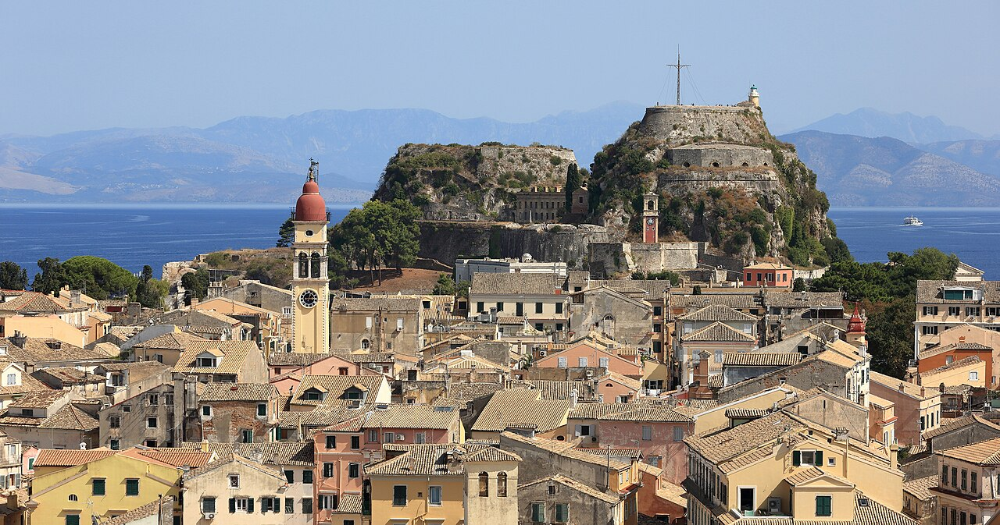
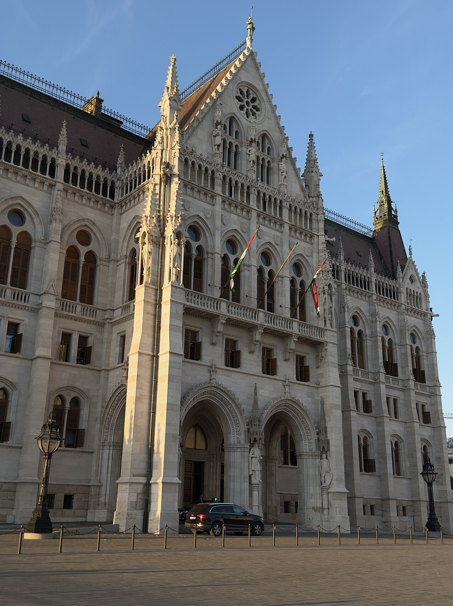

티라나 블로러
확인- 수단
- 버스 · 시외버스(남부 터미널, 30분 간격)
- 소요
- 약 2시간 45분
- 환승
- 직행
2시간 30분~3시간.
공항 도시에서 첫 숙박지까지의 이동입니다.
발칸 · 숨겨진 소도시
Albanian Riviera & Corfu
알바니아 해안을 따라 내려가 사란더에서 배로 30분, 그리스 코르푸섬에서 끝내는 바다 여행.



해외 여행 블로그들이 코르푸와 알바니아 남부를 페리로 묶는 동선을 자주 권합니다. 블로러·히마러·사란더를 거쳐 코르푸에서 2박하고 코르푸 공항으로 나갑니다.


지도: © OpenStreetMap 기여자
현지 8박 9일 · 블로러 1박 → 히마러 3박 → 사란더 2박 → 코르푸 2박
도착 인천 → 티라나 공항 → 블로러 (버스 약 2시간 45분). 도착일은 숙소 주변 위주로 가볍게.
독립 광장·무라디에 모스크 → 해안 산책로 루니아 → 카니나 성 전망 → 해변.
숙박: 블로러
이동 블로러 → 히마러 · 버스 약 1시간 45분 확인
히마러 구시가지 성 → 리바디 해변 → 포르토 팔레르모 성.
숙박: 히마러
드헤르미 → 길리펫 → 야레 해변. 버스가 드물어 택시·보트를 씁니다.
숙박: 히마러
숨은 만으로 가는 보트 투어 또는 해변 휴식.
숙박: 히마러
이동 히마러 → 사란더 · 버스 약 1시간 45분 확인
해안 산책로 → 레쿠르시 성 일몰 → 해산물 저녁.
숙박: 사란더
부트린트 고고유적(유네스코, 버스 약 40분) → 크사밀 해변·작은 섬들.
7~8월 크사밀은 매우 붐빕니다. 6월·9월이 물도 따뜻하고 한산합니다.
숙박: 사란더
이동 사란더 → 코르푸 · 배 약 45분 확인
구 요새 → 리스톤 회랑 → 스피아난다 광장 → 신 요새 전망 → 구시가지 골목.
구시가지가 유네스코 세계유산입니다.
숙박: 코르푸
팔레오카스트리차 해변·수도원(버스 약 50분) 또는 아킬레이온 궁전.
숙박: 코르푸
오전에 못 본 곳을 둘러보고 공항으로 이동합니다. 귀국편은 대부분 다음 날 한국에 도착합니다.
2시간 30분~3시간.
공항 도시에서 첫 숙박지까지의 이동입니다.
1시간 30분~2시간.
1시간 30분~2시간. 표는 현금으로 기사에게.
30분~1시간 30분. 겨울에는 편수가 줄어듭니다. 알바니아(비솅겐)→그리스(솅겐) 출입국 심사.
국경 알바니아(비솅겐) → 그리스(솅겐) 출입국 심사가 있습니다.
이스탄불·비엔나·프랑크푸르트·뮌헨 등에서 1회 경유.
여름에는 유럽 각지에서 직항·전세편이 많고, 겨울에는 아테네 경유가 일반적입니다.
6·9월
11~4월
7~8월은 알바니아 해변과 코르푸 모두 매우 붐빕니다.

.jpg?width=960)
.jpg?width=960)
중기(6~7박) · 1개국 · 추천 5·9월
프라하 다음 체코. 관광객이 적은 바로크 대학 도시와 와인 지대를 기차로 돕니다.


중기(5~6박) · 1개국 · 추천 4·5·10월
온천 콜로네이드와 필스너 맥주의 고향을 도는 체코 서쪽 일주.



중기(6~7박) · 1개국 · 추천 6·7·8월
부다페스트만 보고 떠나기 아쉬운 사람을 위한 와인 마을과 호수 휴양.


중기·장기(7~8박) · 2개국 · 추천 7·8·9월
비엔나로 들어가 슬로바키아를 기차로 가로질러 타트라 산을 걷고 부다페스트로 나오는 코스.
정보 확인일 2026-11-21